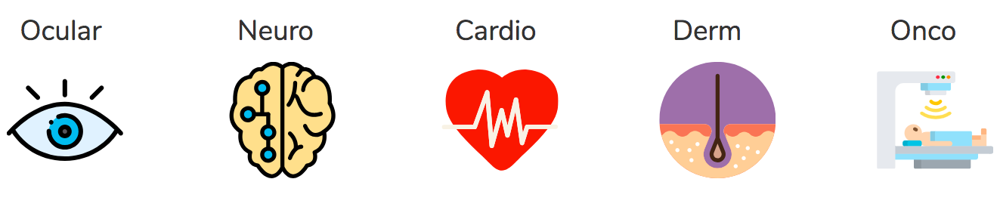

A bioquilt is a global knowledge graph of human medical data
The Unmet Needs
Petabytes of aging-related disease data are scattered across hundreds of open-source biological databases. These data sources are not mutually compatible.
Data dispersion impedes integrative, data-driven approaches to drug discovery thereby significantly hampering scientific progress. To this day, aging biomarkers are yet to be found (Magalhães et. al 2017).
Pressed for time and exorbitant expenses of validating aging therapies, researchers are in need of ways to establish criterias for prioritizing existing aging-associated targets.
Bioquilt platform
Bioquilt's approach is to integrate public domain aging -omics data to enable systematic drug target identification and prioritization for aging therapeutics.
These are the "big five" areas of data focus:
